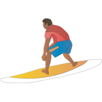
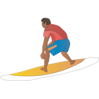
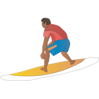
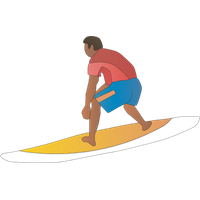

let's go on an
Adventure


 

 

Havet dekker 70 prosent av overflaten på jorden og rommer 95 prosent av leveområdene på planeten vår. Men klimaendringer, overfiske og forurensning truer livet i havet - og oss.
Livet oppstod i havet, og fortsetter den dag i dag å gi oss liv. Samtidig er havet levebrødet til over en milliard mennesker.
Ifølge FNs organisasjon for mat og jordbruk, er én av tre undersøkte villfiskpopulasjoner overfisket og presset til bristepunktet.
Havet spiller en helt avgjørende rolle for alle menneskers liv, men likevel setter vi havet under stadig større press. Det enorme mylderet av liv i havet er i ferd med å forsvinne.
Klimagassutslipp som gjør havet varmere og surere, forurensing og plastsøppel, overfiske og ødeleggelse av havbunnen og andre leveområder utgjør alle store trusler mot livet i havet – og mot vår egen eksistens.
I regioner med lite kontroll av fiskeriene finner man fortsatt ødeleggende fiskeripraksiser som skader både dyrelivet og leveområdene langs kysten og i havet.
Moderne fiskeutstyr er svært effektivt. Dessverre kan det også være veldig ødeleggende for både leveområde og truede arter. Når det fiskes, kan utstyr som for eksempel langline eller trål få med seg en rekke uønskede arter, andre arter enn de man er på jakt etter. Det er dette vi kaller bifangst.
På det store mørke dypet, finnes det en fisk kalt sjødjevler som lever på 1000-2500 meters dyp. Disse fiskene har et kontinuerlig lysengde agn for å lure andre småfisk til å komme nærme. Lyset produseres asv bakterier som lever i slimlaget på hudoverflaten.